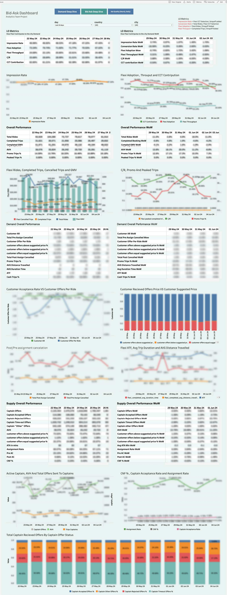
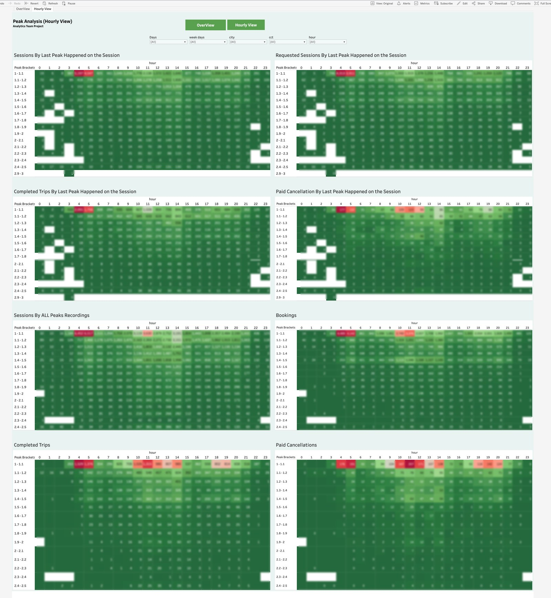

Marketplace Intelligence
The suite that answers one question from every angle: why do rides fail? Booking-funnel analytics, acceptance-rate decomposition, peak-pricing analysis, and anomaly matrices — with the metric glossary written into the dashboards.
Note on numbers: no figure from inside a client dashboard is presented here as an achievement. The build is the story; published screenshots have absolute figures blurred.
01The Business Problem
In a two-sided marketplace, a failed ride has many possible causes: the customer never got an offer, got one and waited too long, cancelled before or after assignment, or the price didn't clear. Aggregate completion rates hide all of that. The commercial and ops teams needed to know where the booking funnel leaks, and how peak pricing and trip distance change captain behavior.
02My Role
Sole analyst on the product: self-written SQL for every view, hourly and daily parameterized architectures, and the in-dashboard metric glossary that made the suite readable across departments. One person owned the questions, the queries, and the answers.
03What I Built
Bid-Ask Dashboard + Daily Report
A dual-tab navigation system covering the full booking funnel — app open → dropoff added → CCT selection → ride → completion — per city, with funnel drop-offs per stage, LO metrics with in-view definitions, and demand/supply performance blocks with WoW deltas.
Bid-Ask Rides Deep Analysis
Failed rides split by zero-ask vs ask-received, then by timed-out vs customer-cancelled — each with requested-vs-suggested price comparison, captain-offer status breakdowns, and median timing metrics (creation → first ask → assignment → cancellation).
Peak Analysis Workbook
Sessions, bookings, trips, and paid cancellations across 14 peak-multiplier brackets — as overview bars and as 8 hour-of-day heatmap matrices (bracket × 24 hours) with in-row relative highlighting.
User Segments & Anomaly Matrices
User segmentation (Power / High / Medium / Low × Flexi / Marketplace / Shared dependency) with WoW pivots; a duration × distance cross-tab (9 × 11 brackets) that surfaces anomalous rides; and zone-level booking contribution and C/R tables.
04Signature Build Details
05KPIs Defined & Governed
06Decisions Enabled
Bid-Ask Dashboard — funnel overview
(blur all absolute figures)assets/mkt-bidask-funnel.png

Peak Analysis — hourly heatmaps (bracket × hour)
(blur all absolute figures)assets/mkt-peak-heatmaps.png
